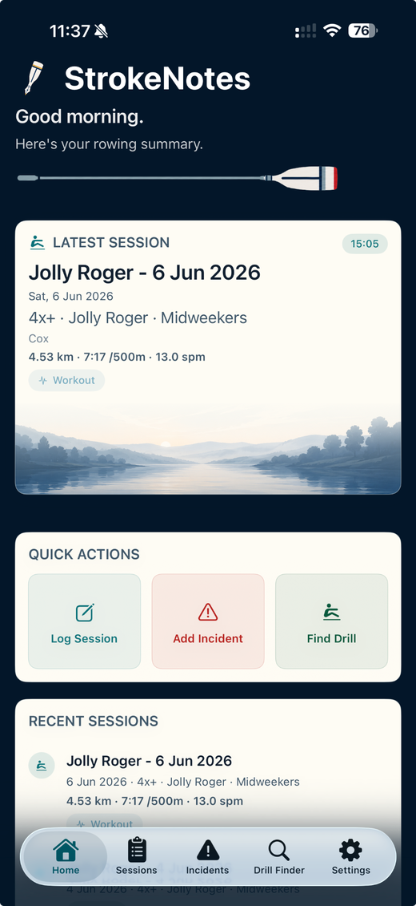

01
Quick to use at the river
Structured enough to be useful, simple enough to complete quickly before or after an outing.
StrokeNotes helps coaches, coxes and crews record outings, drills, feedback and incidents in a calm, practical iPhone app designed around how rowing sessions actually happen.

Clean, readable, club-friendly and built around the real needs of coaches, coxes and rowing volunteers.
Structured enough to be useful, simple enough to complete quickly before or after an outing.
Sessions, crews, drills and incidents are framed in terms that feel natural in a rowing club context.
This site provides the core pages needed for beta testing, including beta access requests, the user guide, support and privacy information.